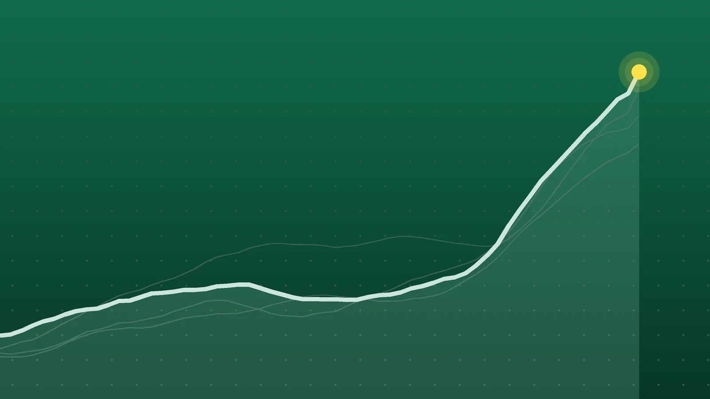

SportsExplainer
Cricket Scores, Oct. 27: Abhishek’s 38-Ball 113 Seals India Series
Two of the day’s three matches were over long before their scheduled finish. India needed 80 balls to chase 199, and Pakistan’s innings lasted barely half its overs.

Quick take
- India beat New Zealand by six wickets with 40 balls to spare in Wellington, taking an unbeatable 3-0 lead in the five-match T20I series.
- Abhishek Sharma scored 113 from 38 balls, sharing an opening stand of 133 in 7.1 overs with Vaibhav Sooryavanshi.
- Dilshan Madushanka took a career-best 5-34 as Sri Lanka bowled Pakistan out for 110 and won by eight wickets, sending England out of the tri-series.
- Afghanistan beat Zimbabwe by 37 runs in Sharjah, with player of the match Rashid Khan scoring 30 from 10 balls and taking 2-20.
Why it's trending Three men’s internationals between full-member nations finished on Oct. 27: a T20I in Wellington, an ODI in Lahore and a T20I in Sharjah.
Cricket scores for Oct. 27
India wrapped up its T20I series in New Zealand with two games to spare, and it did so in a hurry. Chasing 199 in Wellington, India got there in 13.2 overs, winning by six wickets with 40 balls left, Outlook India reported. Abhishek Sharma made 113 from 38 balls.
In Lahore, Sri Lanka needed even less time. Dilshan Madushanka took 5-34, a career best, as Pakistan were bowled out for 110 in 25.3 overs, and Sri Lanka won by eight wickets to book a place in Saturday’s tri-series final, WION reported. The result knocked England out.
All final results
| Format | Winner | Result | Loser | Venue | Note |
|---|---|---|---|---|---|
| T20I (3rd of 5) | India | reached 199 target in 13.2 overs, won by 6 wickets | New Zealand (198-3) | Wellington | Abhishek Sharma 113 from 38; Daryl Mitchell 89 not out |
| ODI (tri-series) | Sri Lanka | 114-2 (18.1 overs) beat 110 (25.3 overs) by 8 wickets | Pakistan | Lahore | Madushanka 5-34; Kamindu Mendis 62 not out |
| T20I (1st of 3) | Afghanistan | 177 (19.5 overs) beat 140 (19.1 overs) by 37 runs | Zimbabwe | Sharjah | Rashid Khan 30 from 10 and 2-20; Fazalhaq Farooqi 3-13 |
The day’s matches between full-member nations come from Wikipedia’s 2026-27 international calendar, and each result appears in at least two of the sources listed.
India sweep past New Zealand in Wellington
New Zealand’s 198-3 looked competitive. Daryl Mitchell made 89 not out from 52 balls, with Finn Allen (40 from 25) and Bevon Jacobs (39 not out from 23) helping, according to Outlook India.
It lasted about seven overs. Abhishek and Vaibhav Sooryavanshi, who was moved up to open after batting at No. 3 in the second match, put on 133 for the first wicket in 7.1 overs, The Herald reported. Jacob Duffy’s first over cost 26. India were 178-2 after 10 overs. Sooryavanshi made 45 from 19 balls before Kyle Jamieson removed Abhishek, who left to a standing ovation.
Madushanka sends Sri Lanka to the final
Sri Lanka captain Kusal Mendis won the toss and bowled first, and Pakistan lost three wickets in the powerplay, WION reported. Babar Azam’s 29 was the top score, with Hasan Nawaz adding 17; Sahan Arachchige took 2-24 to go with Madushanka’s five.
The chase was simple. Kamindu Mendis and Avishka Fernando opened with a 50 stand, and Kamindu finished on 62 not out from 60 balls as Sri Lanka reached 114-2 in 18.1 overs, according to the CREX scorecard. Pavan Rathnayake was there at the end on 23.
Afghanistan open with a win in Sharjah
Zimbabwe chose to bowl and had Afghanistan at 31-3 after the powerplay, CricTracker reported. Ijaz Ahmadzai’s quick half-century and Shahidullah Kamal’s 46 rebuilt the innings, and Rashid Khan’s 30 from 10 balls lifted it to 177. Newman Nyamhuri took 4-31 for Zimbabwe, The SportsTak scorecard shows. Ryan Burl’s 32 led the reply, but Fazalhaq Farooqi (3-13) and Rashid (2-20) bowled Zimbabwe out for 140.
What it means
- The speed of India’s chase: 199 runs from 80 balls works out to almost 15 runs an over, about five an over faster than New Zealand managed. Abhishek’s strike rate was close to 300.
- A short day in Lahore: the ODI used 43.4 of a possible 100 overs. Sri Lanka won with 31.5 overs, or 191 balls, still to bowl.
- Tri-series: Pakistan and Sri Lanka meet in the final on Saturday in Lahore. Pakistan had beaten England by one wicket on Sunday, WION reported, and Sri Lanka’s last group game against England is now a dead rubber.
- NZ vs. India: India lead 3-0 with two matches left, so the series is decided.
- Afghanistan vs. Zimbabwe: Afghanistan lead the three-match series 1-0.
What’s next
- Friday: New Zealand vs. India, 4th T20I, at Eden Park in Auckland, The Herald reported.
- Saturday: Pakistan vs. Sri Lanka, tri-series final, in Lahore.
- Sri Lanka’s remaining group game against England, also at the Gaddafi Stadium, comes before the final.
Sources
- Outlook India India Vs New Zealand Live Score, 3rd T20IOct. 27, 2026
- The Herald (South Africa) Abhishek Sharma's blistering century leads India to T20 series victory over New ZealandOct. 27, 2026
- WION Lahore ODI: Sri Lanka crush Pakistan to qualify for tri-series final; England knocked outOct. 27, 2026
- CREX SL vs PAK, 5th Match, ODI Tri-Series in Pakistan 2026: Full ScorecardOct. 27, 2026
- CricTracker Afghanistan beat Zimbabwe by 37 runs in 1st T20I at SharjahOct. 27, 2026
- The SportsTak Afghanistan vs Zimbabwe 1st T20I Highlights 2026: Afghanistan beat Zimbabwe by 37 runsOct. 27, 2026
- Wikipedia International cricket in 2026–27Oct. 27, 2026
Keep reading

Cricket Scores, Oct. 22: Sri Lanka Chase 430 Despite Brook’s 202
Cricket results for Oct. 22, 2026: Sri Lanka chased 430 to beat England, South Africa routed Australia and India won a record T20I chase.

NZ vs IND 1st T20I: India Chase 226 in a Record Win
India beat New Zealand by four wickets in the 1st T20I on Oct. 22, chasing 226, their highest successful T20I chase. Scores, key players and what’s next.

NBA Scores, Oct. 26: Cavs Hand Wolves 1st Loss in Overtime
NBA scores for Oct. 26, 2026: all 9 finals, including Cleveland’s overtime win over Minnesota, Golden State’s first win and Miami’s 0-4 start.